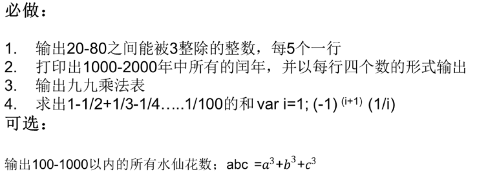

练习题：
- 课堂案例敲一遍
- 一个新入职，月工资为2000元的员工，每年涨当年工资5%，20年后的月工资是多少？
- 山上有一口缸可以装50升水，现在有15升水。老和尚叫小和尚下山挑水，每次可以挑5升。问：小和尚要挑几次水才可以把水缸挑满？通过编程解决这个问题
- 打印100–200之间所有能被3或者7整除的数
- 计算10的阶乘 (1*2*3*4*5*6*7*8*9*10 n的阶乘1*2……*n)
- 计算1+3+5+...+99的和
- 99乘法表
- 判断一个数是不是合数。(指自然数中除了能被1和本身整除外，还能被其他的数整除（不包括0)的数。)
- 判断一个数是不是素数。(除了1和它本身以外不再有其他的除数整除。)
作业：
-

- 宰相的麦子：相传古印度宰相达依尔，是国际象棋的发明者。有一次，国王因为他的贡献要奖励他，问他想要什么。达依尔说：“只要在国际象棋棋盘上（共64格）摆上这么些麦子就行了：第一格一粒，第二格两粒，……，后面一格的麦子总是前一格麦子数的两倍，摆满整个棋盘，我就感恩不尽了。”国王一想，这还不容易，刚想答应，如果你这时在国王旁边站着，你会不会劝国王别答应，为什么？